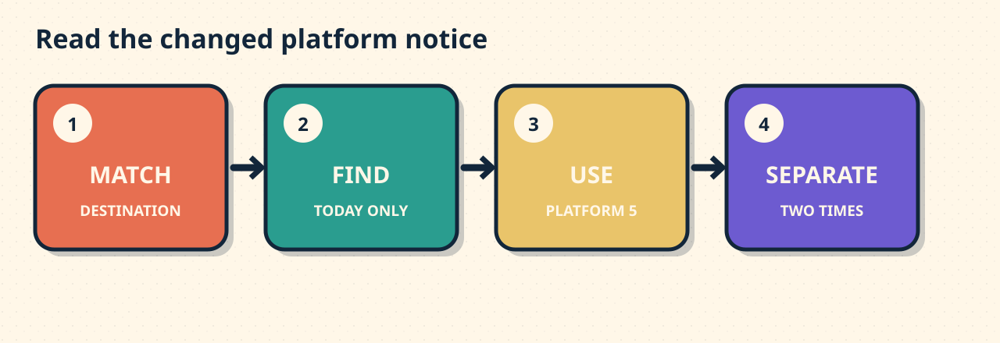

Which Platform Changed?
Goal: Find destination, exception, platform, and boarding-time evidence in a station notice, then state the current travel details.
Meet the situation
COAST LINE — Saturday 28 September. The 14:20 train to Saint-Pierre usually leaves from platform 2. Today only, it leaves from platform 5. Boarding closes at 14:15.

Match the destination. Then follow the exception.
The model
Evidence: “Today only, it leaves from platform 5. Boarding closes at 14:15.”
Statement: “The train leaves from platform 5 today. Boarding closes at 14:15.”
Meaning, grammar, context
Meaning: Usually gives the normal rule. Today only changes it.
Grammar: leaves from + platform; at + time.
Context: Check destination and date before using the exception.
Decision one
Which platform should you use today?
Decision two
Remember: boarding closes at 14:15. Departure is 14:20.
Which statement gives both current details?
Your turn
An airport shuttle usually uses bay 3. A notice says: ‘Monday only: Bay 7. Boarding closes 08:40. Departure 08:45.’
Write two sentences for another traveller. State today's bay and boarding deadline.
Review later
Tomorrow, ask: Which words show the normal rule, the exception, and the boarding deadline?
No account. No tracking. No saved progress.